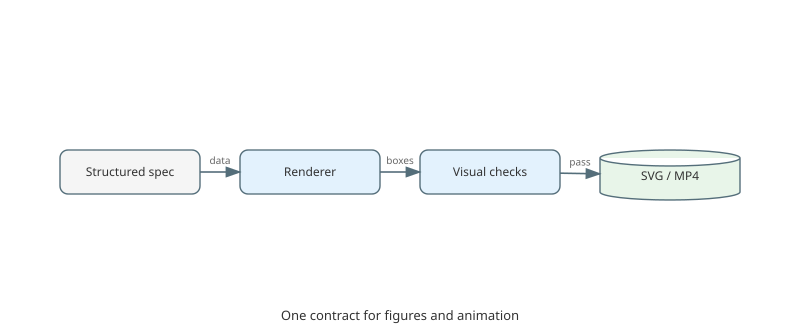
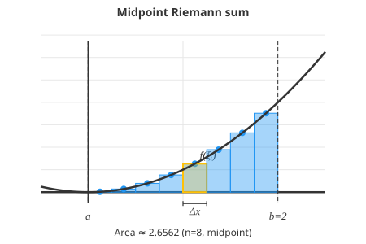
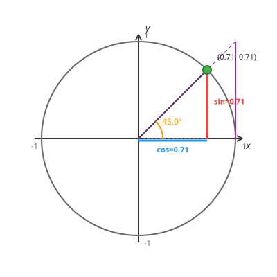
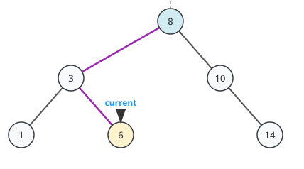
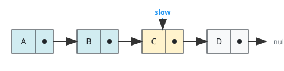
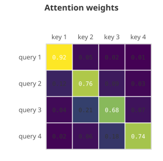
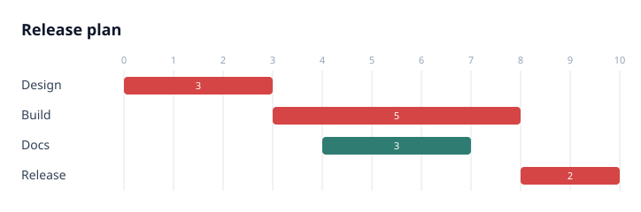
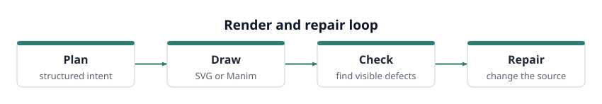

Systems · architecture_diagram
Components, connections, and annotations
Structured hint Services and stores are laid out from IDs; labelled edges are routed between them.
Python library · deterministic SVG and Manim · built for AI agents
Figures and animations that show their work.
Straightedge is an open-source Python library that turns structured data, formulas, templates, or a natural-language prompt into a deterministic SVG figure or Manim scene — then exposes the underlying geometry, so an application or an AI agent can catch overlaps, clipping, and missing content before accepting the result.
Straightedge is an open-source Python library for generating deterministic SVG diagrams and Manim animations from structured data, formulas, templates, or natural-language prompts. Unlike screenshot- or image-based generation, Straightedge exposes the underlying geometry so applications and AI agents can detect overlaps, clipping, missing content, and other visible defects before accepting a visual.
The premise is that a visual can render successfully and still be wrong. A curve can leave the frame, a label can land on a formula, a chart can come out empty, and nothing in a successful render says so. An LLM writing figure code is working blind for exactly this reason: it emits code, the code runs, and no signal comes back. Straightedge is the part that can tell it what came out — which is why the same design that makes the output trustworthy for a person makes it usable by an agent.
Two independent lanes share one spec. A structured dictionary becomes an SVG string using nothing but the Python standard library. The same intent, sent down the video lane, becomes a Manim scene rendered to MP4. Neither lane needs a browser or a rendering service, and the figure lane has no runtime dependencies at all.
The same structured input produces the same geometry, every run. No sampling, no seed, no drift between a draft and the version that ships.
Agents inspect bounds, positions, overlaps, and structured findings instead of guessing whether an image looks right.
Labels are the strings you supplied — selectable, searchable, and translatable, rather than an image model's impression of characters.
35 figure templates render from the standard library alone: no browser, no headless Chrome, no network call, no API key.
The same workflow produces Manim scenes for explanations where motion carries the argument, not just a static frame.
A planner or LLM generates structured intent, renders it, reads the validation findings, and repairs its own input.
01 / Dependency-free SVG
A structured dictionary becomes an SVG string with no browser, network, or rendering service. The same lane covers equations, data structures, architecture, project plans, and business diagrams.

Systems · architecture_diagram
Structured hint Services and stores are laid out from IDs; labelled edges are routed between them.

Math · riemann_sum
Structured hint f(x)=x², eight midpoint rectangles, one marked sample.

Math · unit_circle
Structured hint A 45° point with its reference triangle, sine, cosine, and tangent.

Data structures · binary_tree
Structured hint Nested nodes, a highlighted path, a pointer, and a root annotation.

Data structures · linked_list
Structured hint Four nodes, two visited states, and a named current pointer.

Data · heatmap
Structured hint A labelled attention matrix using a normalized viridis palette.

Projects · gantt
Structured hint Start, duration, and critical status determine every bar.

Process · flow_diagram
Structured hint Labelled steps wrap without breaking words or overflowing the canvas.
02 / Manim animation
These scenes are generated by Straightedge’s own planner and template path. Each card keeps the input intent beside the result; the original inputs here came through the optional Chinese teaching adapter.
Calculus · tangent as a limit
Input intent Show the derivative of y=x² by moving a secant toward its tangent and explaining the slope.
“画 y=x² 的导数，用割线逼近切线并解释斜率”
Calculus · area by refinement
Input intent Show the integral area beneath y=x²+1 using refining Riemann rectangles.
“画 y=x²+1 的积分面积，用黎曼矩形展示”
Trigonometry · linked representations
Input intent Synchronize a moving point on the unit circle with one full period of a sine graph.
“用单位圆上的动点同步生成正弦函数图像，展示一个周期”
Conics · invariant distance
Input intent Mark an ellipse’s two foci and show that a moving point keeps their distance sum constant.
“画一个椭圆，标出两个焦点，展示动点到焦点的距离和保持不变”
03 / Standalone examples
These dataflow examples do not use the prompt pipeline. They simulate the mechanism, assert its central claim, and only then animate it. Read the writeups →
Systolic array
Asserted claim Every emitted value equals A @ B, while the send log proves the reduction in weight reads.
Pipeline parallelism
Asserted claim GPipe and 1F1B finish together, but the simulated peak activation count falls from 23 to 6.
Data parallelism
Asserted claim Every rank receives the true elementwise sum; counted bytes stay below 2D while serial hops grow.
An open-source Python library for generating deterministic SVG diagrams and Manim animations from structured data, formulas, templates, or natural-language prompts. It exposes the underlying geometry of what it drew, so an application or an AI agent can detect overlaps, clipping, out-of-frame curves, and missing content before accepting the visual.
Mermaid and Graphviz turn a text description into a layout, and both are excellent at that. Straightedge covers a wider set of figure types than graph layout — Riemann sums, unit circles, Gantt charts, heatmaps, T-accounts, call stacks — and it returns the geometry it produced alongside the SVG, so the caller can check the drawing rather than trust it. It also renders Manim video from the same structured input, which neither Mermaid nor Graphviz does.
An image model returns pixels, so the same prompt gives a different picture each time and nothing in the output states where anything is. Straightedge is deterministic — the same structured input produces the same geometry — and because the output is constructed rather than sampled, labels are the text you supplied instead of an approximation of letters. The geometry is inspectable, so defects are reportable rather than a matter of opinion.
Yes, and that is the case it is designed for. An agent can enumerate the template catalog and its parameter contracts, render a figure, read back structured findings about what came out wrong, and repair its input. An optional MCP server exposes the library over the Model Context Protocol, and the errors distinguish a refusal from a failure, so an agent can tell I will not draw that from something broke.
No. The SVG lane is pure Python standard library with zero runtime dependencies — no browser, no headless Chrome, no network call, no rendering service. Manim, Whisper, and the MCP SDK live behind optional extras, so a caller who only wants figures installs nothing extra.
Yes. A prompt is planned into a structured spec, matched against the deterministic template set where one fits, and otherwise handed to an LLM writer, reviewer, and bounded repair loop that emits a Manim scene. When the model path fails, it degrades to a deterministic template rather than returning nothing.
Yes, at three separate moments, because each catches what the others cannot. Preconditions run before anything is drawn and refuse a plan that would render beautifully while answering a different question. QC reads the built scene and reports what is empty, clipped, off-frame, or printed on top of something else. A label check catches on-screen text that survived translation untranslated.
Only in the optional prompt-driven agent lane, and never in the deterministic template lane, which executes no model output at all. When the agent lane runs, generated scenes are screened by an AST allowlist that blocks imports and interpreter escapes. That screen is defence in depth rather than a sandbox, so untrusted input should be run in an isolated environment.
Build the visual. Read the findings. Repair what is visible.